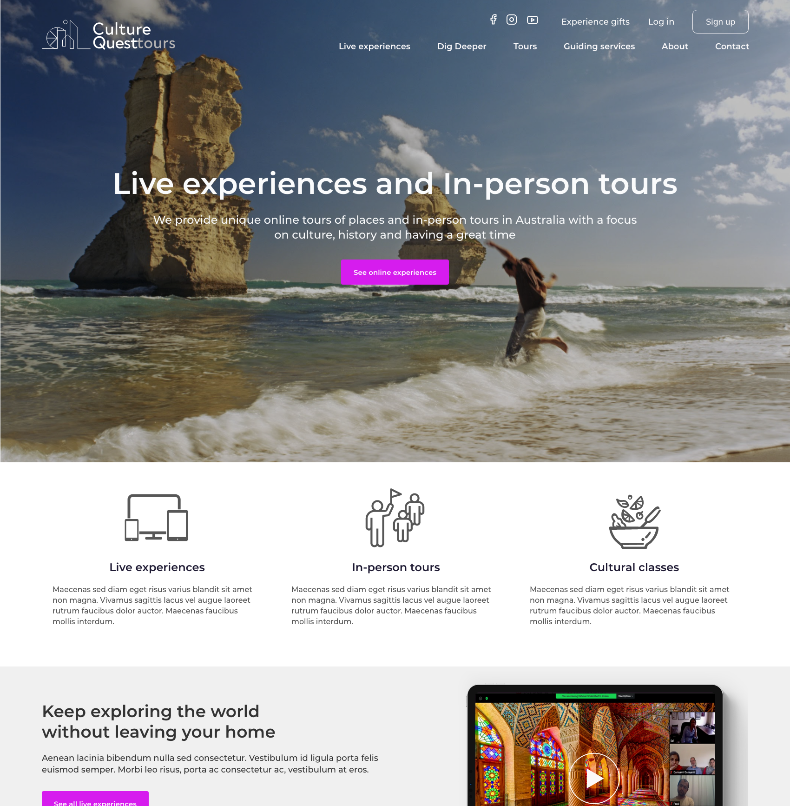
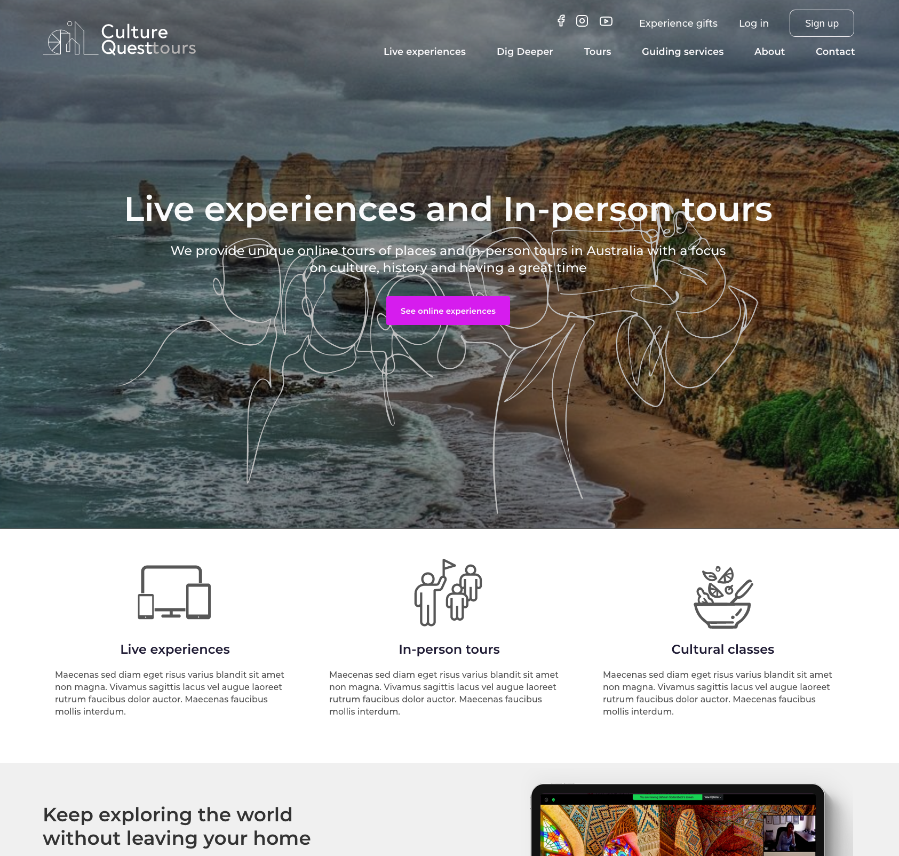
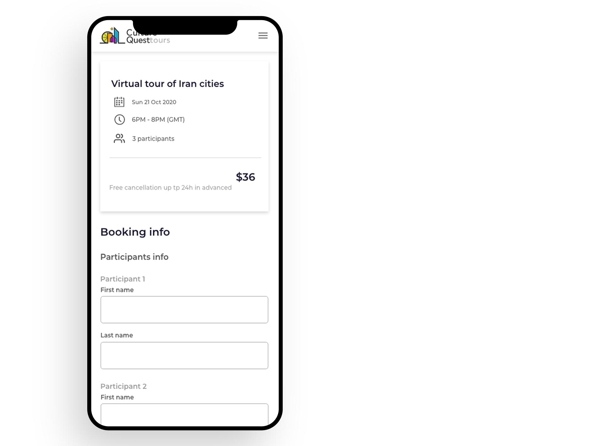
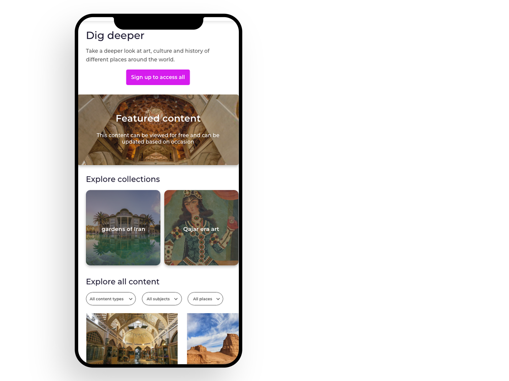
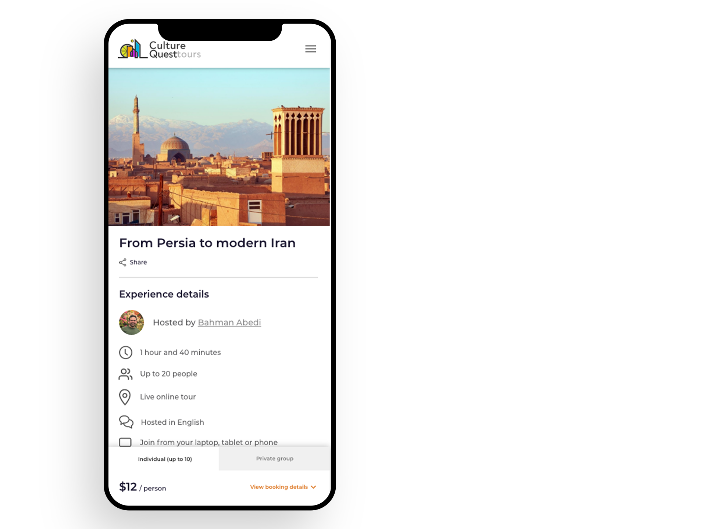

<div class="container" style="margin-top: 2rem;">
  <div class='row'>
    <div class='col-lg-12'>
      <h1>Culture Quest Tours</h1>
      <p>
        Culture Quest Tours (CQT) is founded by a tour leader and world traveler to provide virtual tours and experiences to people around the world.
         An affordable and comfortable way to get a feeling for a new place and learn about it.
      </p>
      <p>
        I helped them re-design the site (~20 pages) as well as conceptualize the expansion of their business in the future. <br/>
      </p>
      <p>
        I did an initial round of user tests to figure out what worked and didn't work with the original site,
        helped with thinking about different audiences and their needs, designed their journeys  throught the site and booking process
        and worked with developers to communicate the designs.
            </p>
      <h2 style="padding-top: 5rem;">Homepage screens</h2>
      <figure class="img-wrapper">
        
      </figure>
      <figure class="img-wrapper">
        
      </figure>
      <h2 style="padding-top: 5rem;">User exclusive pages</h2>
      <p>
        Pages that provided interactive and self-paced experiences to users.
            </p>
      <figure class="img-wrapper">
        
      </figure>
      <h2 style="padding-top: 5rem;">Viewing tours and checkout</h2>
      <figure class="img-wrapper center">
        
        
        
      </figure>
    </div>
  </div>
</div>
